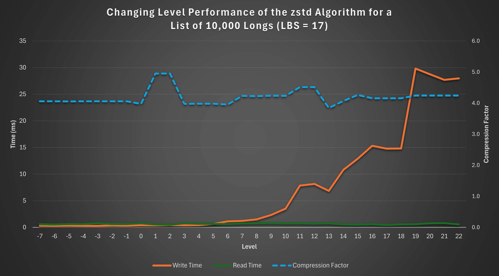

Measuring Compression Performance in Q/KDB+

Compression performance in Q/KDB+ is influenced by several critical factors, including the choice of compression parameters — logical block size (LBS), compression algorithm, and algorithm level. These parameters significantly impact the compression factor (how effectively data is compressed) and influence the speed of reading and writing compressed data. Since these parameters are user-configurable, selecting the optimal combination for a specific use case is essential.
Equally important is the nature of the data being compressed. Characteristics such as data type, structure, and repetitiveness can heavily influence compression performance.
In this blog, we’ll explore strategies for evaluating compression performance in Q/KDB+ and discuss how to identify the parameter configurations best suited to your data and requirements. If you’re new to compression in Q/KDB+, I recommend starting with my earlier post, An Introduction to Compression in Q/KDB+, where I cover the basics of compression methods and their usage. Understanding those fundamentals will provide helpful context for the experiments and analyses discussed here.
Setup
To evaluate compression performance in Q/KDB+, I created a standalone tool available in the QTools repository. The specific script for measuring compression performance can be found here. Simply copy or download this script to use it, and refer to the documentation for detailed instructions on the tool’s functions.
I have included all the code used to generate the results, so you can see examples of how this tool is used throughout this blog.
Note
- All times (write and read) are reported in milliseconds.
- Q/KDB+ version used: 4.1 (2024.05.31)
Important
The results of these tests can vary based on factors such as machine architecture, the specific random values used, and other environmental conditions. The results in this blog are illustrative and intended to guide you in conducting your own performance evaluations.
Saving/Loading Results
Running some of these tests can be time-consuming. To avoid losing your results and allow for future analysis, you can save them to disk and reload them later. The following functions facilitate saving and loading data:
dataDir:`:/<DATA-PATH>/data;
// Save data
sd:{.Q.dd[x;` sv y,`csv] 0: "," 0: value y}[dataDir;];
// Load data
ld:{y set ("jjjhjfffn";enlist ",") 0: .Q.dd[x;` sv y,`csv]}[dataDir;];
Simply set the dataDir variable to the desired directory for saving the results. Once set, you can save and load the results table as shown below:
// Save the results table
q)sd `results
// Load the results table
q)ld `results
Static Data
Historic data is static and unlikely to change. For such data, we can optimise compression by testing different parameter configurations and selecting the best fit for our requirements.
Example Dataset
Consider a simple example: a list of 10,000 randomly generated long integers ranging from 0 to 999.
data:10000?1000
Although generated randomly, this dataset is now static. Using the zipPerf tool introduced in the setup, we can evaluate various compression parameters to understand their impact on performance.
Testing Compression Parameters
First, load the performance measurement tool and run the test:
q)\l <PATH>/qtools/src/zipPerf.q
// Run the test - Takes approx. 4 minutes (%1e6 converts timespan to milliseconds)
q)results:update writeTime%1e6, readTime%1e6 from .zipPerf.testAll data
Performance Metric Statistics
Key performance statistics for compression factor, write time, and read time can be summarised with the following query:
select
metric:`compFactor`writeTime`readTime,
maximum:(max compFactor; max writeTime; max readTime),
minimum:(min compFactor; min writeTime; min readTime),
average:(avg compFactor; avg writeTime; avg readTime)
from results
Example output:
metric maximum minimum average
---------------------------------------
compFactor 4.957621 0.9974073 3.649513
writeTime 170.298 0.188266 12.57895
readTime 2.733323 0.060592 0.7867975
This analysis reveals the range and average values for each metric. To determine the best compression configuration, let’s examine each metric individually.
Compression Factor
The compression factor measures space savings, with higher values indicating more efficient compression. We identify the configuration yielding the highest compression factor:
q)select compFactor, lbs, alg, lvl from results where compFactor=max compFactor
compFactor lbs alg lvl
----------------------
4.957621 17 5 1
4.957621 17 5 2
4.957621 18 5 1
4.957621 18 5 2
4.957621 19 5 1
4.957621 19 5 2
4.957621 20 5 1
4.957621 20 5 2
The highest compression factor (4.957621) is achieved with the zstd algorithm at level 1 or 2 and LBS values between 17 and 20.
Write Time
Write time measures how quickly data is compressed and written to disk. Lower values are preferable:
q)select writeTime, lbs, alg, lvl from results where writeTime=min writeTime
writeTime lbs alg lvl
---------------------
0.188266 13 2 0
The fastest write time (0.188266 ms) is achieved using the gzip algorithm at level 0 with an LBS of 13.
Read Time
Read time measures how quickly compressed data can be retrieved and decompressed. Again, lower values are better:
q)select readTime, lbs, alg, lvl from results where readTime=min readTime
readTime lbs alg lvl
--------------------
0.060592 12 5 10
The fastest read time (0.060592 ms) is achieved using the zstd algorithm at level 10 with an LBS of 12.
Choosing the Best Configuration
The ideal compression configuration depends on specific requirements:
- Maximising Compression Factor: Suitable when storage is limited.
- Minimising Write Time: Ideal for scenarios with time-sensitive writes.
- Minimising Read Time: Common in read-heavy environments, such as historical databases.
Balancing Metrics
In practice, trade-offs between metrics are often necessary. Suppose we prioritise a quick write time (<0.3 ms) while maintaining a compression factor >2. We can refine our query:
q)`writeTime xasc select compFactor, writeTime, lbs, alg, lvl from results where writeTime<0.3, compFactor>2
compFactor writeTime lbs alg lvl
--------------------------------
2.67451 0.263748 17 3 0
2.469249 0.264199 14 3 0
2.4869 0.268497 19 1 0
2.368178 0.274438 13 1 0
This query identifies configurations that balance write time and compression efficiency. The final choice should align with operational priorities and system constraints.
Generalised Compression Testing with Random Data
While historic data in KDB+ is typically static, it’s often impractical to test compression across all columns, tables, and partitions due to the sheer volume of data. Instead, we can simulate different data scenarios by generating random datasets and testing compression on them.
This approach allows us to evaluate compression performance across a variety of data organisations, providing insights into the parameters that yield “good” performance in the general case.
The Tool
The zipPerf tool includes the function .zipPerf.testAllRand for this purpose. This function takes two arguments:
- Number of Lists: The number of random datasets to generate and test.
- Data Generator Function: A function to generate random datasets.
For example, the following call generates 10 random lists, each containing 10,000 longs between 0 and 999, and evaluates compression performance for each list:
.zipPerf.testAllRand[10;{10000?1000}]
The results are aggregated, computing the average performance metrics for each parameter configuration.
Running the Test
To demonstrate, let’s run the test and convert the time metrics to milliseconds:
// Run the test - Takes approx. 30 minutes
q)results:update writeTime%1e6, readTime%1e6 from .zipPerf.testAllRand[10;{10000?1000}];
Using the same queries from the Static Data section, we summarise the key statistics from the results:
// Key performance statistics
metric maximum minimum average
---------------------------------------
compFactor 4.954066 0.9974073 3.649914
writeTime 60.00062 0.1174 9.881192
readTime 1.236025 0.328472 0.6572004
// Maximum compression factor
compFactor lbs alg lvl
----------------------
4.954066 17 5 1
4.954066 18 5 1
4.954066 19 5 1
4.954066 20 5 1
// Minimum write time
writeTime lbs alg lvl
---------------------
0.1174 0 0 0
// Minimum read time
readTime lbs alg lvl
--------------------
0.328472 0 0 0
Observations
-
Compression Factor: The best compression factor (4.954066) is achieved using the zstd algorithm at level 1, with any LBS between 17 and 20.
-
Write and Read Times Without Compression: The fastest write (0.1174 ms) and read (0.328472 ms) times occur when no compression is applied, which is expected since compression and decompression introduce overhead.
Let’s exclude the results for uncompressed data and identify the best configurations for write and read times:
Best Write Time with Compression:
q)select writeTime, lbs, alg, lvl from (select from results where alg<>0) where writeTime=min writeTime
writeTime lbs alg lvl
---------------------
0.153473 17 2 0
The most favourable write time (0.153473 ms) occurs with the gzip algorithm at level 0 and an LBS of 17.
Best Read Time with Compression:
q)select readTime, lbs, alg, lvl from (select from results where alg<>0) where readTime=min readTime
readTime lbs alg lvl
--------------------
0.364619 13 4 12
The most favourable read time (0.364619 ms) occurs with the lz4hc algorithm at level 12 and an LBS of 13.
Impact of Algorithm Level on Compression Performance
In this section, we explore how varying the algorithm level affects compression performance. Using the results from the previous section, we focus on the zstd algorithm with a fixed LBS of 17 to analyse performance trends.
Results
The below query can be used to gather the results:
q)select lvl, compFactor, writeTime, readTime from results where alg=5, lbs=17
lvl compFactor writeTime readTime
---------------------------------
-7 4.057967 0.315761 0.602378
-6 4.05925 0.29988 0.540294
-5 4.055668 0.313296 0.6288
-4 4.056856 0.299043 0.636049
..
Visualisation
To better understand these trends, the following graph illustrates the relationship between the algorithm level and the performance metrics:

Observations
-
Read Time: The read time remains relatively constant across levels, showing no significant variation.
-
Compression Factor: The compression factor is generally stable, with a slight “bump” observed at levels 1 and 2, indicating better compression efficiency at these levels.
-
Write Time: Write time exhibits an exponential increase as the level rises, highlighting the trade-off between compression level and write performance.
This analysis demonstrates that if constrained to the zstd algorithm with an LBS of 17, levels 1 or 2 are optimal. These levels achieve the maximum compression factor while keeping write time low.
Impact of Logical Block Size (LBS) on Compression Performance
This section examines how varying the Logical Block Size (LBS) affects compression performance. For consistency, we analyse results using the zstd algorithm at a fixed level of 18.
Results
The below query can be used to gather the results:
q)select lbs, compFactor, writeTime, readTime from results where alg=5, lvl=18
lbs compFactor writeTime readTime
---------------------------------
12 3.419139 18.3573 0.55395
13 3.545852 21.61034 0.513634
14 3.787947 25.07718 0.686512
15 3.907031 14.57396 0.636689
16 4.059368 15.26676 0.68913
17 4.155016 14.82453 0.563237
18 4.155016 14.19188 0.650421
19 4.155016 14.71257 0.675492
20 4.155016 14.67119 0.833243
Visualisation
The graph below visualizes how the compression factor, write time, and read time vary with LBS:
")
Observations
-
Compression Factor: The compression factor steadily increases as the LBS grows, peaking at LBS values 17–20.
-
Write Time: Write time initially rises with increasing LBS but stabilises and even slightly decreases beyond LBS 14.
-
Read Time: Read time remains relatively constant across the range of LBS values, with minor variations.
Based on these results, if the zstd algorithm is used at level 18, the optimal choice of LBS is 17 or 18, depending on whether read or write performance takes priority. These configurations maximise the compression factor while maintaining stable read and write times, offering a balanced trade-off between efficiency and performance.
Structure and Size of Data
Compression performance can be significantly influenced by the structure and size of the data.
This section explores the effects of sorted, contiguous, and larger datasets on compression performance, comparing the results to the unsorted, smaller dataset analysed earlier.
For consistency, each test was performed with a fresh Q session using the same random seed, ensuring direct comparability of results.
Sorted Data
To assess the impact of sorting, we rerun the general random data test seen previously, with the data sorted in ascending order. Sorting is achieved using the asc keyword in Q.
// Run the test - Takes approx. 30 minutes
q)results:update writeTime%1e6, readTime%1e6 from .zipPerf.testAllRand[10;{asc 10000?1000}];
Summary of Results
metric maximum minimum average
---------------------------------------
compFactor 41.2923 0.9974073 23.22625
writeTime 238.3535 0.14515 15.27876
readTime 1.084563 0.183848 0.3457299
Analysis
Compared to the unsorted data summary table, sorting results in a dramatic increase in both the maximum and average compression factors, demonstrating significant space-saving potential.
However, there is a small penalty in terms of read and write times, as seen in the increase in their maximum and average values. Additionally, if the data isn’t already sorted, the time required for sorting must also be factored in.
Contiguous Data
Contiguous ordering arranges identical values side by side, enhancing compression opportunities.
For example:
Contiguous: 3 3 3 3 1 1 1 2 2
Not contiguous: 3 1 2 1 3 1 2 3 3
We transform the random data into a contiguous order by grouping identical values using group and then flattening the result with raze.
// Run the test - Takes approx. 30 minutes
q)results:update writeTime%1e6, readTime%1e6 from .zipPerf.testAllRand[10;{raze d group d:10000?1000}];
Summary of Results
metric maximum minimum average
---------------------------------------
compFactor 32.44508 0.9974073 20.15545
writeTime 218.1142 0.120421 12.29244
readTime 1.102754 0.19812 0.3532618
Analysis
Contiguous data demonstrates a significant increase in compression factors compared to unsorted data. While the improvements are not as pronounced as those seen with sorted data, the degradation in read and write times is less severe.
Contiguous data therefore offers a balance between space-saving benefits and read/write performance, making it a practical alternative to sorting.
Larger Data
Compression performance can also vary based on dataset size.
We reran the test with a larger list of 1,000,000 longs to evaluate its effect on compression.
// Run the test - Takes approx. 8 hours
q)results:update writeTime%1e6, readTime%1e6 from .zipPerf.testAllRand[10;{1000000?1000}];
Summary of Results
metric maximum minimum average
--------------------------------------
compFactor 4.985321 0.9980438 3.734221
writeTime 759141 3.421783 2301.216
readTime 5.054386 0.4867 1.579741
Analysis
The larger dataset achieves slightly improved compression factors due to increased redundancy and repetition within the data. However, write and read times are significantly longer, which is expected given the greater volume of data being processed.
Different Datatypes
So far, we have focused exclusively on the long datatype. However, the tests described earlier can be applied to any datatype in Q.
This section explores the impact of compression on two additional datatypes: boolean (a simpler datatype) and symbol (a more complex datatype).
Boolean
In Q/KDB+, a boolean is a single-byte (8-bit) value that represents one of two possible states: true (1b) or false (0b). The simplicity of its structure and the high likelihood of repeated values make it an interesting candidate for compression.
General Test
The test was rerun for a random list of 10,000 booleans:
// Run the test - Takes approx. 25 minutes
q)results:update writeTime%1e6, readTime%1e6 from .zipPerf.testAllRand[10;{10000?0b}];
Summary of Results
metric maximum minimum average
---------------------------------------
compFactor 5.844129 0.9928628 4.395721
writeTime 6.01018 0.109531 1.858013
readTime 0.643794 0.151092 0.2843463
Analysis
Compared to the results for longs (summary table), booleans show:
- Higher compression factors: The simpler structure and greater redundancy in boolean data improve compression.
- Faster read and write times: Smaller memory requirements for booleans contribute to quicker operations.
Sorted Test
The test was repeated for a sorted list of 10,000 booleans.
metric maximum minimum average
---------------------------------------
compFactor 120.6747 0.9928628 96.03797
writeTime 2.937618 0.109034 0.1614437
readTime 0.708015 0.174412 0.2824265
Analysis
Sorting results in dramatic improvements in compression performance:
- The average compression factor jumps to 96, significantly outperforming sorted longs.
- The write times are notably reduced, reflecting the efficient encoding of long runs of identical values in sorted boolean data.
Large Dataset Test
The test was scaled up to a list of 1,000,000 booleans to observe the effects of larger datasets.
metric maximum minimum average
---------------------------------------
compFactor 7.715686 0.9979961 4.951624
writeTime 4447.509 0.563583 353.4303
readTime 4.269396 0.277281 0.9963099
Analysis
- The compression factor increases with the larger dataset, reflecting the enhanced opportunities for compression in longer sequences of boolean values.
- Write and read times scale up as expected, but the performance remains manageable due to the datatype’s simplicity.
Symbol
In Q/KDB+, the symbol datatype is analogous to a string in that it can represent sequences of characters. However, unlike strings, symbols are irreducible atomic values in Q/KDB+, with each symbol internally stored as an integer reference to a global dictionary of unique values. This representation makes symbols more complex than simpler data types like longs.
Given their structure, we can expect compression results for symbols to differ from those observed for longs.
General Test
The compression test was rerun on a random list of 10,000, 3-character symbols:
// Run the test - Takes approx. 25 minutes
q)results:update writeTime%1e6, readTime%1e6 from .zipPerf.testAllRand[10;{10000?`3}];
Summary of Results
metric maximum minimum average
---------------------------------------
compFactor 2.053863 0.9968108 1.60796
writeTime 5.365143 0.212508 1.26698
readTime 1.450128 0.63938 0.9329227
Analysis
Compared to the results for longs (summary table), symbols exhibit the following key differences:
- Lower Compression Factor: The more complex structure of symbols, coupled with potentially lower redundancy, reduces compression efficiency.
- Faster Write Times: While uncompressed long data is typically written faster than symbol data, the opposite trend is observed for compressed data. On average, compressed symbol data is written faster than compressed long data. This is likely because symbols tend to achieve lower compression ratios due to their more complex structure and representation, resulting in less computational overhead during the compression phase of the write process.
Sorted Test
The test was repeated for a sorted list of 10,000, 3-character symbols:
metric maximum minimum average
---------------------------------------
compFactor 10.58119 0.9968108 5.523273
writeTime 4.763245 0.20937 1.005981
readTime 1.161317 0.498619 0.6530251
Analysis
Sorting significantly impacts the compression performance of symbols:
- Improved Compression Factor: Sorting amplifies redundancy, enabling compression algorithms to achieve a much higher compression factor. This effect is similar to that observed for longs and booleans.
- Improved Write and Read Times: Unlike longs, where sorting often increases write and read times, symbols see slight improvements. This might be due to better memory locality and more efficient processing of the sorted dictionary references.
Contiguous Test
The test was repeated for a contiguous list of 10,000, 3-character symbols:
metric maximum minimum average
---------------------------------------
compFactor 5.316126 0.9968108 3.300586
writeTime 5.221845 0.221293 1.118578
readTime 2.431121 0.520317 0.7447879
Analysis
The results for contiguous data fall between those for unsorted and fully sorted data:
- Moderate Compression Factor Improvement: While not as effective as full sorting, contiguous ordering still groups identical symbols together, improving compression efficiency.
- Slight Improvements in Write and Read Times: The impact on performance is not as pronounced as with fully sorted data, reflecting the less regular structure of contiguous ordering.
Overall, contiguous ordering provides a trade-off, achieving better compression factors than unsorted data without the full processing cost of sorting.
Large Dataset Test
Finally, the test was scaled up to a list of 1,000,000, 3-character symbols to observe the impact of dataset size:
metric maximum minimum average
--------------------------------------
compFactor 2.139341 0.9980379 1.651971
writeTime 858.8655 6.676792 147.2629
readTime 70.03013 31.14028 40.45668
Analysis
- Slightly Improved Compression Factor: Larger datasets provide more opportunities for redundancy, resulting in a modest increase in the compression factor.
- Significant Increase in Write and Read Times: As expected, processing times scale with dataset size. However, the faster write times relative to longs are maintained, suggesting symbols’ internal structure benefits compression algorithms even for larger datasets.
Conclusion
In this blog, we explored the performance of compression algorithms in Q/KDB+ across various dimensions, including algorithm choice, compression levels, logical block sizes, data structure, size, and datatype. Through extensive testing and analysis, we uncovered several key insights:
-
Compression Algorithms and Parameters: The choice of algorithm, level, and logical block size (LBS) has a significant impact on compression performance. Optimal settings often require balancing compression factor, write time, and read time based on specific use cases.
-
Data Structure and Size: Sorting or grouping data (contiguous ordering) before compression can significantly improve compression factors, albeit at the cost of increased read and write times. Larger datasets often achieve better compression factors due to higher redundancy but require more time to process.
-
Datatypes: Simpler datatypes like booleans generally achieve better compression performance compared to complex datatypes like symbols. However, symbols showed faster write times for compressed data, highlighting the role of underlying data representation in compression efficiency.
Understanding these factors can help you make informed decisions when implementing compression in Q/KDB+, enabling you to tailor configurations to your specific data and performance needs. By leveraging the insights and methodologies discussed here, you can strike the right balance between storage efficiency and operational performance, optimising your use of compression in a production environment.
The results in this blog are a starting point. Real-world performance will depend on your specific data and workload, so it’s worth experimenting to find what works best for your use case.